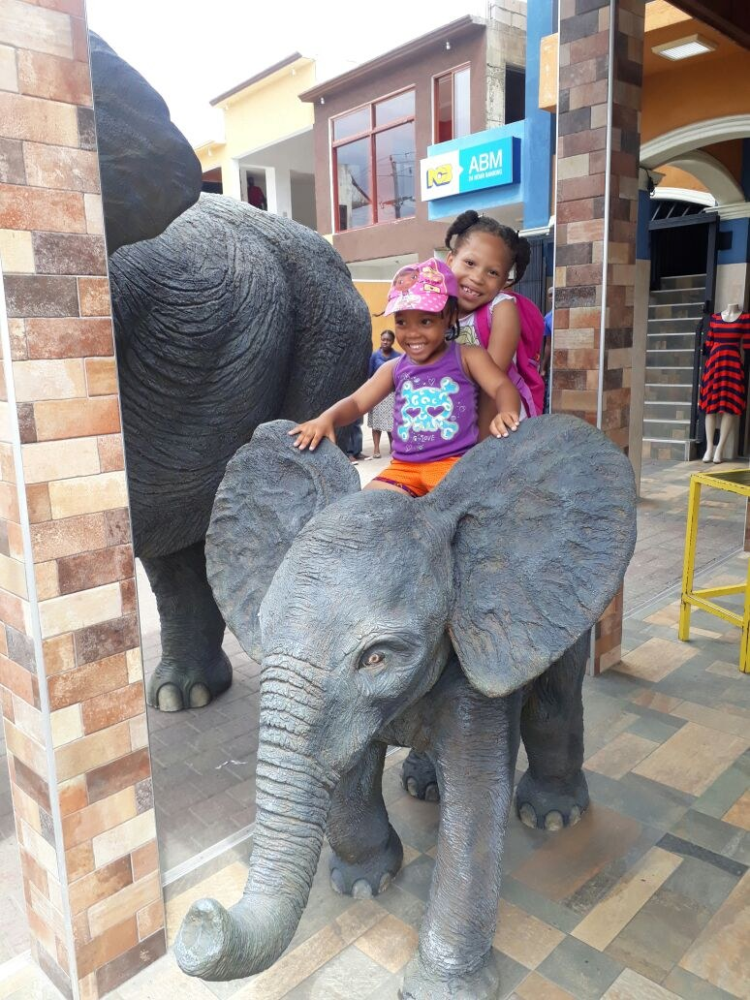

Spanish Town · Jamaica
Heritage Mall Elephant
Monumental animal sculpture

A large-scale elephant sculpture created as a sculptural installation for Heritage Mall.
View All PressSpanish Town · Jamaica
Monumental animal sculpture

A large-scale elephant sculpture created as a sculptural installation for Heritage Mall.
View All Press